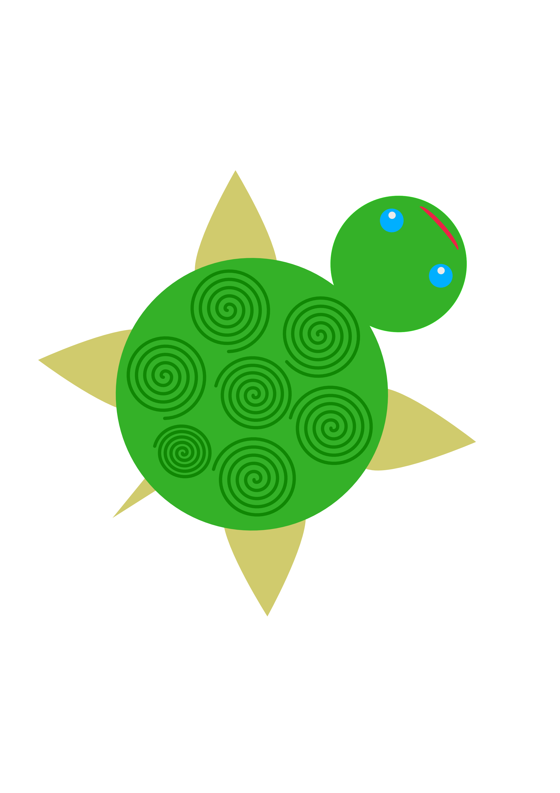

Tortue

Pour ce projet personnel j'ai choisi de réalisé une tortue afin d'agrémenter mes conversation avec mes proches. J'ai par ailleurs un intérêt personnel pour les tortues ce qui m'a poussé à réaliser cet annimal.
Pour réaliser ce projet j'ai utilisé la suite Affinity.